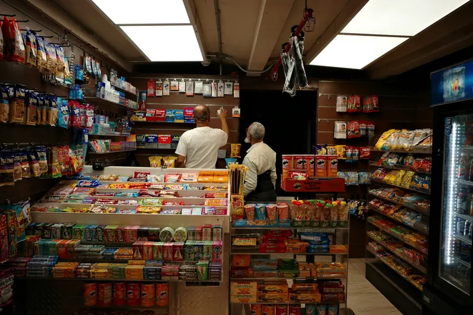
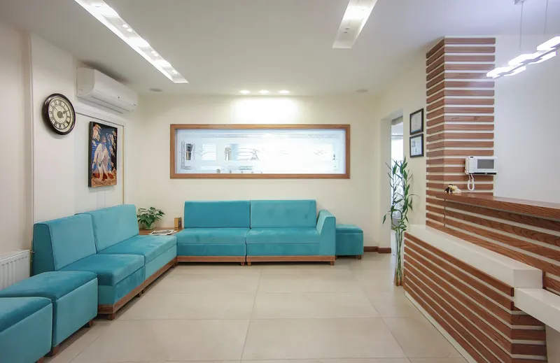
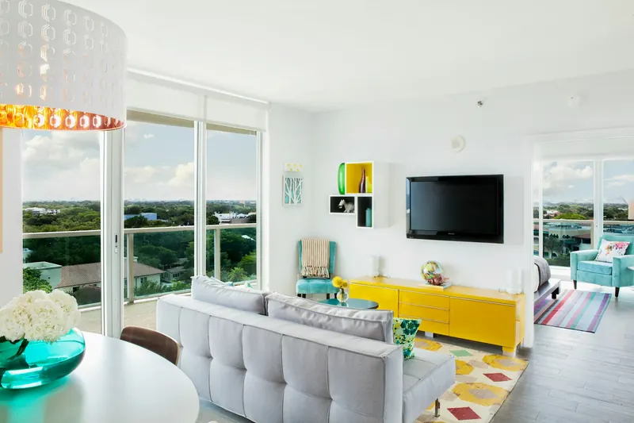
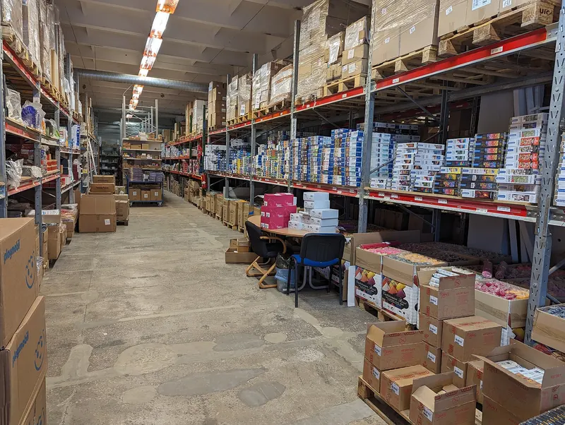

Nueve tipos de negocio.
Busca el tuyo y mira los problemas de siempre que resolvemos ahí, con qué servicios y, si hay, la demo para probar.
Ir a un tipo de negocio

Restaurantes y cafés, 20 servicios
Menos espera en las mesas y comandas que no se pierden
Que el cliente pida y pague desde la mesa, que la cocina vea cada comanda a tiempo y que tú veas el salón entero desde la caja.
Lo que te resolvemos
- Los clientes esperan para pedir, para otra ronda y para pagar.
Un QR o una etiqueta NFC en cada mesa: piden, llaman al mesero y pagan desde su teléfono, con la propina que ellos eligen.
- Las comandas en papel se pierden o se leen mal.
Pantalla en la cocina con cada pedido por estación y el tiempo que lleva esperando.
- No sabes qué mesa lleva cuánto ni cuál pidió la cuenta.
El plano del salón en la caja con el estado de cada mesa y su cuenta abierta, lista para cobrar y facturar.
- Pagas comisión por cada pedido a domicilio.
Tu propia app o página de pedidos, para tu restaurante, tus sucursales o un grupo de restaurantes, con tus motorizados y pago con Yappy o tarjeta.
- Pasas el día copiando pedidos de WhatsApp a la cocina.
Un asistente toma el pedido por WhatsApp y la comanda sale sola en la cocina.
- Se daña la mercancía cuando falla una nevera de noche.
Sensores de temperatura que te avisan al WhatsApp antes de perderla.

Tiendas, minisúper y comercio, 20 servicios
Que la caja cuadre, el inventario también, y nadie se vaya de la fila
Vender también por internet, saber cuánta gente entra y cuánta compra, y contar la mercancía sin pasar la noche anotando.
Lo que te resolvemos
- Hay pérdidas y no sabes dónde: mercancía que falta o la caja que no cuadra.
Cámaras que marcan los momentos que vale la pena revisar, sin ver horas de video.
- No sabes cuántas personas entran ni cuántas terminan comprando.
Un contador en la puerta que, junto con tus ventas, te da la tasa de conversión por hora y por día.
- Se forman filas en caja y la gente se va.
La cámara avisa al encargado cuando la fila pasa de cierto número.
- Contar el inventario toma días y nunca cuadra.
Inventario por escaneo con RFID o con la cámara del teléfono, comparado contra tu sistema.
- Vendes por WhatsApp a mano, uno por uno.
Catálogo y pedidos por WhatsApp, o tu propia tienda en línea con Yappy y tarjeta.

Clínicas y consultorios, 7 servicios
Pacientes que llegan a su cita y una recepción que no vive pegada al teléfono
Recordatorios por WhatsApp que el paciente confirma con un toque, una agenda sin citas encimadas y la lista de a quién llamar.
Lo que te resolvemos
- Los pacientes no llegan y el hueco se pierde.
Recordatorio por WhatsApp 2 o 1 día antes, con botón para confirmar, y reintentos hasta tener respuesta.
- La recepción pasa el día al teléfono agendando.
Una página donde el paciente pide su cita solo, con los horarios libres de cada profesional.
- La sala de espera es un desorden.
Pantalla de turnos que llama al siguiente paciente por su número.
- El expediente vive en papel o en hojas sueltas.
Expediente digital del paciente, con permisos por persona y el consentimiento que pide la Ley 81.
- Pacientes que viven lejos o solo necesitan un control.
Videoconsulta con cobro previo desde la misma agenda.
Hospedaje y turismo, 16 servicios
Reservas directas sin comisión, y un aviso antes de vender dos veces la misma noche
Tu propia página de reservas con Yappy y tarjeta, un vigilante que avisa cuando Booking o Airbnb dejan de sincronizar, y el huésped entrando solo con su código.
Lo que te resolvemos
- Pagas comisión por reservas que podrían ser directas.
Motor de reservas en tu página, con depósito en línea y varias unidades en una reserva.
- Una doble reserva porque un calendario dejó de sincronizar.
Calendario sincronizado con los canales y un vigilante que avisa y cierra la venta si uno se cae.
- Esperar al huésped para entregar llaves.
Cerraduras con un código por reserva y registro del huésped en línea antes de llegar.
- El aire acondicionado prendido en una cabaña vacía.
Luces, aire y consumo de cada unidad desde el teléfono.

Bienes raíces, 7 servicios
Que el cliente recorra el apartamento antes de ir a verlo
Recorridos 360 y 3D con medidas, fotos profesionales y un agente de WhatsApp que contesta a las 11 de la noche.
Lo que te resolvemos
- Las fotos no transmiten cómo es el espacio.
Recorrido 360 de cada ambiente, o en 3D caminando de un cuarto a otro, con las medidas reales, para enlazar desde tu anuncio.
- Visitas con gente que no iba en serio.
Un agente de WhatsApp que contesta, pregunta presupuesto y fecha, y agenda solo a los interesados.
- Tus propiedades dependen de portales de terceros.
Tu propio sitio de propiedades, con fichas, planos y recorridos.
- Terrenos y proyectos difíciles de mostrar.
Tomas aéreas con dron y mapa del terreno.

Bodegas, oficinas e industria, 19 servicios
Enterarte de lo que pasa en la planta antes de que pare
Sensores en motores, tanques y consumo, el registro de quién entra y el conteo de lo que se produce, con avisos al WhatsApp.
Lo que te resolvemos
- Un motor o una bomba se daña sin aviso y para todo.
Sensores de vibración y temperatura que avisan antes de la falla.
- Nadie sabe cuánto se produjo hasta el cierre.
Contador de producción en línea y básculas conectadas al sistema.
- Entra y sale gente sin registro.
Control de acceso con QR o tarjeta, y lectura de placas en el portón.
- Los camiones salen y no sabes dónde están.
GPS por vehículo con historial de rutas.
- Accidentes por no usar el equipo de seguridad.
Cámaras que avisan cuando alguien entra sin casco o chaleco.
Escuelas y academias, 3 servicios
Mensualidades que se pagan a tiempo y circulares que llegan a la casa
Matrícula y mensualidades en línea, asistencia sin lista de papel y los avisos a los padres por WhatsApp.
Lo que te resolvemos
- Cobrar mensualidades es perseguir pagos.
Matrícula y cobro en línea con Yappy o tarjeta, recordatorio de pago y estado de cuenta por estudiante.
- La asistencia se pasa en papel y se pierde.
Asistencia con QR o tarjeta, con aviso a los padres si el estudiante no llegó.
- Las circulares no llegan a la casa.
Avisos y recordatorios a los padres por WhatsApp.
Talleres, autolavados y salones, 3 servicios
Citas que no se cruzan y clientes que saben cuánto les falta
Turnos en línea, un aviso por WhatsApp cuando el carro o el servicio está listo, y presupuestos aprobados por escrito.
Lo que te resolvemos
- El cliente espera sin saber cuánto le falta.
Turnos en línea con su lugar en la fila y aviso por WhatsApp cuando está listo.
- Presupuestos aprobados de palabra que luego se discuten.
Órdenes de trabajo con fotos del vehículo y aprobación del cliente por WhatsApp.
- Citas que se cruzan en la barbería o el salón.
Agenda por profesional con recordatorio y depósito en línea.
Cualquier negocio, 24 servicios
Que te encuentren en Google y que el trabajo repetido lo haga el sistema
Página web, apps, sistemas a medida y automatizaciones para lo que hoy se hace en Excel, en papel o copiando y pegando.
Lo que te resolvemos
- El negocio no aparece cuando lo buscan.
Página web, perfil de Google con tu ubicación y reseñas, y correo con tu dominio.
- Todo vive en Excel y nadie sabe cuál es la versión buena.
Software a medida para cómo trabaja tu negocio: inventario, clientes, cotizaciones.
- Alguien copia y pega datos todo el día.
Automatizaciones e integraciones entre tus sistemas, y lectura de facturas con IA.
- Las mismas preguntas por WhatsApp a toda hora.
Un asistente con IA que contesta con tu información y te pasa lo que no sabe.
- Se cae la computadora y se pierde todo.
Respaldo, seguridad y soporte técnico para tu oficina.
¿Tu negocio no está en la lista?
Cuéntanos qué necesitas y te mandamos la propuesta por escrito: qué haríamos, con qué equipo y en cuánto tiempo queda.
O escríbenos a info@alphateklab.com
Primero la propuesta por escrito. Sin compromiso.